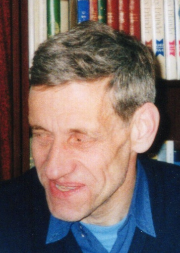

Född 10 maj 1975 i Norrköpings Östra Eneby (E) 1 .

F Åke Roger Axel Johansson.Född 11 okt 1950 i Tåby (E) 2 .
Född 29 dec 1928 i Stora Arentorp, Skällvik (E) 3 .
Död 11 okt 1981 i Grönberga Kårtorp, Norrköpings Sankt Johannes (E) 4 .
Född 9 jun 1927 i Sandtorp, Hälla Lillgård, Hälla, Mogata (E) 5 .
Död 31 mar 2008 på Navestadsgatan 6, Gård 7, Kv Polskan, Navestad, Norrköping, Tingstad (E) 4 .
FMF Gustav Georg Karlsson.

Född 21 jul 1889 i Wartenburg / Vattenborg, Häggebo, Ringarum (E) 6 .
Död 21 jan 1972 på Lidabergsgatan 29, Gård 19, Kv Blåhuvan, Smedby, Norrköping, Norrköpings Sankt Johannes (E) 4 .
FMM Elvira Katarina Karlsson f Bengtsson.
Född 30 mar 1888 i Fyrby 2 Kronogård, Fyrby, Norrköpings Östra Eneby (E) 7 .
Död 28 okt 1980 på Lidabergsgatan 29, Gård 19, Kv Blåhuvan, Smedby, Norrköping, Norrköpings Sankt Johannes (E) 4 .
Född 12 mar 1955 i Drothem (E) 8 .